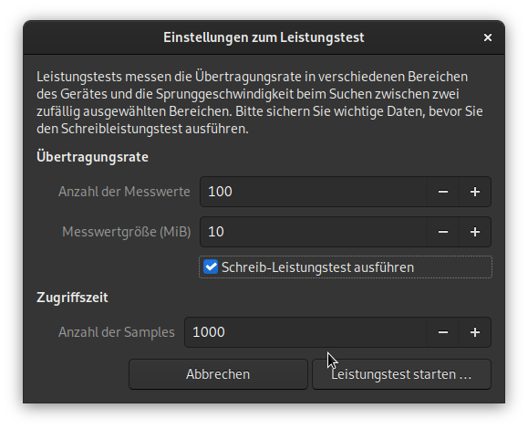
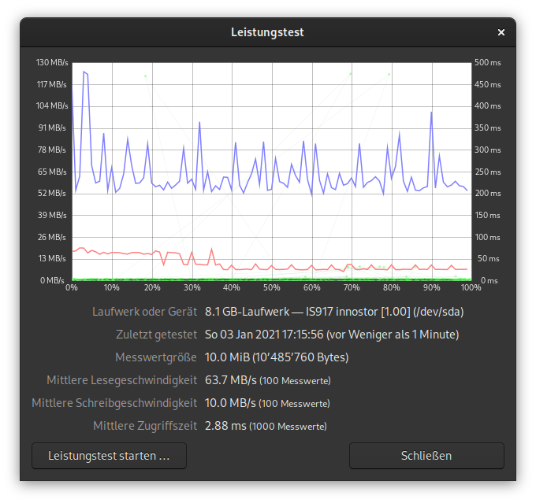
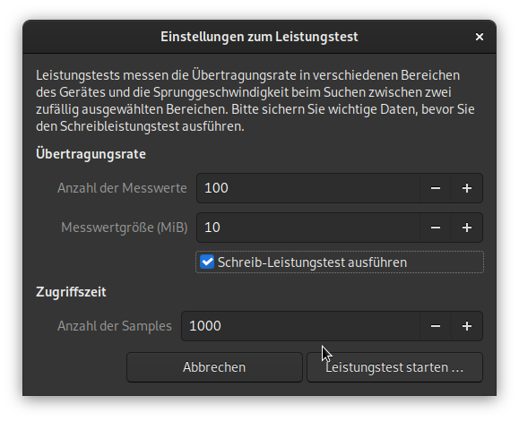
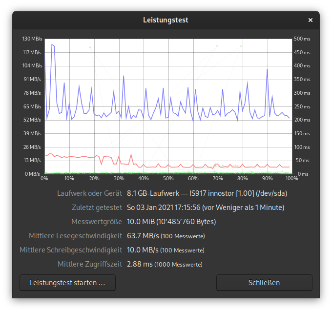
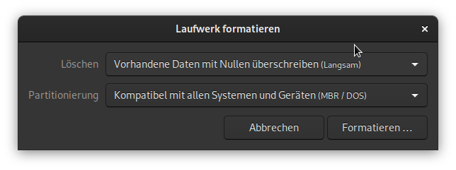
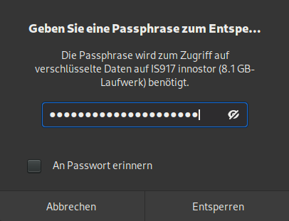

Während den letzten zwei Dekaden haben sich einige USB-Sticks und SD Karten in unserem Haushalt gesammelt. Allerdings hat die Benutzung dieser in den letzten Jahren stark abgenommen. Nun war es an der Zeit, die nicht mehr benötigten Speichermedien, dem Elektrorecycling zuzuführen. Da ich aber keinesfalls möchte, das jemand ohne Forensik Kenntnisse allfällige Daten auf den Speichermedien wieder herstellen kann, wollte ich alle Speichermedien sicher löschen. Als Entscheidungshilfe welche der USB-Stick ich behalten möchte, wollte ich auch die Lese- und Schreibleistung der USB-Sticks und SD Karten messen.
Nach kurzer Recherche hat sich herausgestellt, dass das Programm GNOME Disks (deutsch Laufwerke), alle meine Bedürfnisse erfüllt und es auf meinem System (Fedora 33) schon installiert ist. GNOME Disks (gnome-disk-utility) ist bei den meisten GNOME basierenden Desktop Umgebungen schon standardmässig mit dabei.
Die Lese- und Schreibleistung von USB-Sticks und SD Karten können sehr stark variieren. Dies ist von verschieden Faktoren abhängig. Mit GNOME Disks kann die Lese- und Schreibleistung sehr einfach gemessen werden. Dazu muss das entsprechende Laufwerk ausgewählt werden und über das Menü kann der Leistungstest gestartet werden. Ich habe dazu die Standardeinstellungen verwendet und die Resultate aufgeschrieben.
  
 
Ich kenne mich nicht wirklich mit Dateisystemen und der Speicherung von Daten aus. Grundsätzlich ist es aber so, dass Dateisysteme einen Index pflegen, in dem verzeichnet wird, wo welche Dateien auf dem Datenträger gespeichert sind. Wenn nun eine Datei gelöscht wird, wird einfach der Eintrag im Index gelöscht und der Speicherplatz kann von neuen Daten überschrieben werden. Solange das aber nicht geschehen ist, ist die gelöschte Datei noch vorhanden. Das Betriebssystem kann sie aber nicht mehr finden ohne den Eintrag im Index.
Um das zu testen, habe ich ein USB-Stick mit GNOME Disks mit der Einstellung Vorhandene Daten nicht überschreiben (Schnell) formatiert. Dazu muss das entsprechende Laufwerk ausgewählt werden und über das Menü kann das Laufwerk formatiert werden.

Danach konnte ich mit photorec (dnf install testdisk) die Daten problemlos wiederherstellen.
sudo photorec /dev/sda1PhotoRec 7.1, Data Recovery Utility, July 2019
Christophe GRENIER <grenier@cgsecurity.org>
https://www.cgsecurity.org
Disk /dev/sda1 - 8052 MB / 7679 MiB (RO) - IS917 innostor
Partition Start End Size in sectors
P FAT32 0 0 1 1022 198 44 15726592
Destination /home/remo/Downloads/photorec/recup_dir
Pass 1 - Reading sector 4723456/15726592, 542 files found
Elapsed time 0h00m24s - Estimated time to completion 0h00m55
tx?: 271 recovered
exe: 172 recovered
ttf: 40 recovered
txt: 39 recovered
png: 15 recovered
reg: 2 recovered
bmp: 1 recovered
gif: 1 recovered
wim: 1 recoveredDasselbe vorgehen habe ich mit der Einstellung Vorhandene Daten mit Nullen überschreiben (Langsam) wiederholt. Das Formatieren dauert natürlich viel länger, da der ganze Datenträger mit Nullen überschrieben wird.

Nun konnte ich mit photorec keine Dateien wiederherstellen.
PhotoRec 7.1, Data Recovery Utility, July 2019
Christophe GRENIER <grenier@cgsecurity.org>
https://www.cgsecurity.org
Disk /dev/sda1 - 8052 MB / 7679 MiB (RO) - IS917 innostor
Partition Start End Size in sectors
P FAT32 0 0 1 1022 198 44 15726592
0 files saved in /home/remo/Downloads/photorec/recup_dir directory.
Recovery completed.Die meisten meiner Datenträger sind verschlüsselt. Dadurch entfällt die Datenschutz-Problematik, wenn der Datenträger nicht mehr in meinem Besitz ist. Durch die Verschlüsselung sind die Daten so gut geschützt, dass sie nicht wieder hergestellt werden können ohne den passenden Schlüssel. Das Verschlüsseln von z. B. USB-Stick kann auch mit GNOME Disks gemacht werden. Beim Formatieren des Laufwerks kann die entsprechende Option ausgewählt werden.


Wenn nun das Laufwerk eingehängt wird, muss das Passwort eingegeben werden.
